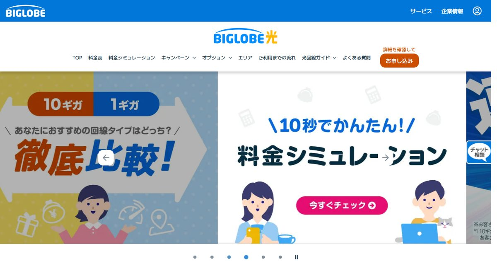
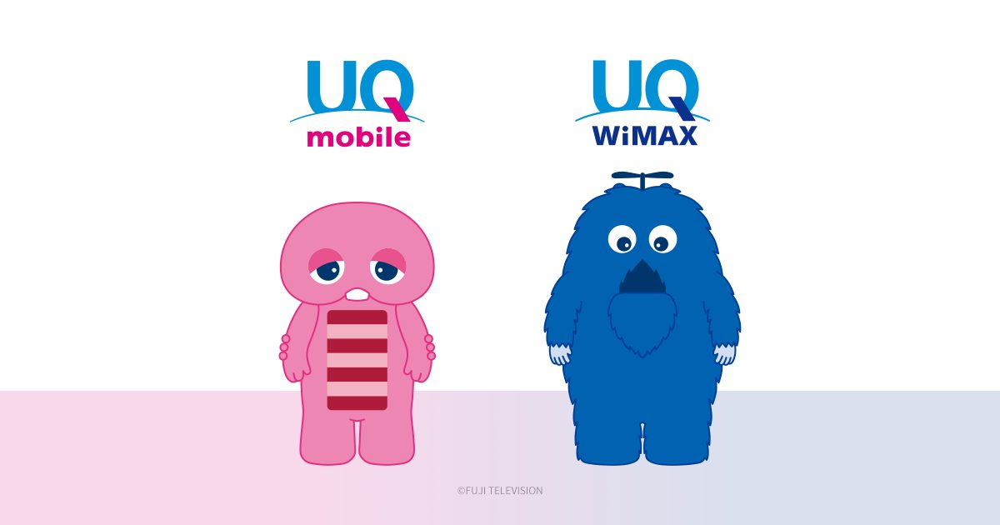
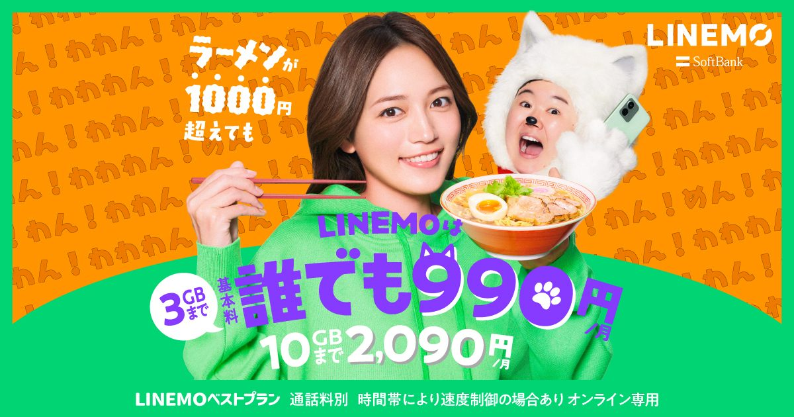

UQモバイルとLINEMO。どちらもキャリアの回線をそのまま使う「サブブランド・オンライン専用ブランド」で、料金帯も近く、比較記事を読んでも決め手が出てこない——という相談をよく受けます。
結論から言うと、この2択は電波の良し悪しでも、料金表の見比べでも決まりません。決まるのは、あなたの自宅のネット回線が「ある一覧表」に載っているかどうかです。ここを最初に確認すると、残りの比較はほとんど不要になります。
自宅のネット回線がUQの自宅セット割の対象で、月のデータが3GBを超えるならUQモバイル。対象外、もしくは月3GB以内で収まるならLINEMO。auひかり・BIGLOBE光・電力系光・UQ WiMAX・J:COMなどは対象ですが、ドコモ光・ソフトバンク光・NURO光・GMOとくとくBB光は対象外です(2026年9月時点)。
UQを選ぶなら自宅回線から:ビッグローブ光の割引条件を見る公式サイトへ →PR・相談や申し込みの前に、料金と条件は公式サイトでご確認ください


なぜ「自宅のネット回線」で決まるのか
UQモバイルとLINEMOは、料金の作り方が根本的に違います。
- UQモバイルは、素の月額を高めに置き、割引を重ねて下げる設計。自宅セット割で1,100円、au PAYカードお支払い割で220円、家族セット割で550円が引かれます(トクトクプラン2の場合)。
- LINEMOは、割引の仕組みをほぼ持たない代わりに、最初から素の月額が低い設計。3GBまで990円、30GBまで2,970円という値付けです。
つまりUQは「割引を受け取る資格があるかどうか」で価格が1,000円以上動きます。LINEMOは誰が申し込んでも同じ値段です。だから最初に確認すべきは電波でも速度でもなく、あなたが割引の資格を持っているか——具体的には、契約中のネット回線が自宅セット割の対象一覧に載っているか、なのです。
ここを飛ばして料金表だけ見比べると、「UQは1,628円から」という広告表記と「LINEMOは990円から」という表記が並び、どちらの条件が自分に当てはまるのか分からないまま迷うことになります。両方とも嘘ではないのに、比較にならない。これがこの2択が難しく見える理由です。
2026年9月時点のプランと素の月額
まず、割引を一切かけていない「素の状態」を並べます。以下はすべて税込で、2026年9月時点の各社公式サイトの表記です。
| プラン | データ量 | 素の月額 | 通話 | 超過後の速度 |
|---|---|---|---|---|
| LINEMO ベストプラン | 〜3GB / 〜10GB | 990円 / 2,090円 | 22円/30秒 | 10〜15GB:300kbps 15GB超:128kbps |
| LINEMO ベストプランV | 〜30GB | 2,970円 | 5分以内の国内通話が無料 | 30〜45GB:1Mbps 45GB超:128kbps |
| UQ トクトクプラン2 | 〜30GB (5GB以下は割引) |
4,048円 (5GB以下は2,948円) |
22円/30秒 | 30GB超:1Mbps 40GB超:128kbps |
| UQ コミコミプランバリュー | 35GB | 3,828円 | 10分かけ放題込み | 35GB超:1Mbps 50GB超:128kbps |
この表だけでも1つ分かることがあります。割引を何もかけない状態なら、どのデータ量帯でもLINEMOのほうが安いということです。UQが逆転するのは、割引を積んだときだけ。だから「UQとLINEMO、どっちが安い?」という問いには、条件を聞かずに答えられません。


UQ側の落とし穴:割引が効くプランと効かないプランがある
UQモバイルは「セット割で安くなるブランド」と説明されがちですが、これは半分しか正しくありません。
2026年9月時点で自宅セット割の対象プランはトクトクプラン2・トクトクプラン・ミニミニプラン・くりこしプラン+5Gです。35GBと10分かけ放題が付くコミコミプランバリューは対象に含まれていません。代わりに「UQコミコミおトク割」で加入月から最大13カ月間660円引き(月3,168円)になりますが、これは新規加入者向けの期間限定割引で、性質が違います。
つまりUQの中でも「セット割で戦うトクトクプラン2」と「割引なしで内容を厚くしたコミコミプランバリュー」に分かれています。前者はLINEMOベストプランのライバル、後者はLINEMOベストプランV+通話オプションのライバル、と考えると整理しやすくなります。この記事でも、以降は主にトクトクプラン2を比較の軸に置きます。


自宅セット割の対象になる回線・ならない回線
ここが本記事の核心です。UQの自宅セット割「インターネットコース」は、対象となるサービスが公式に一覧で決められています。有名な光回線でも、載っていなければ1円も引かれません。
| 区分 | 対象になる(=UQが有利) | 対象にならない |
|---|---|---|
| 独自回線 | auひかり / auひかり ちゅら | NURO光 |
| 電力系・地域系 | コミュファ光 / eo光 / ピカラ / メガエッグ / BBIQ / ひかりゆいまーる / ひかりJ | — |
| 光コラボ系 | BIGLOBE光 / So-net光 / @nifty光 / @TCOMヒカリ / エディオンネット | ドコモ光 / ソフトバンク光 / GMOとくとくBB光 / フレッツ光 |
| 無線 | UQ WiMAX(対象機種・料金プラン) / auスマートポート / auホームルーター5G | ドコモ home 5G / SoftBank Air |
| ケーブルTV | J:COM ほか地域のCATV事業者 | — |
注目してほしいのは光コラボ系の行です。同じNTTのフレッツ網を使う光コラボでありながら、BIGLOBE光・So-net光・@nifty光は対象、ドコモ光・ソフトバンク光・GMOとくとくBB光は対象外。回線の品質ではなく、KDDIとの提携があるかどうかで線が引かれています。回線とプロバイダの違いを理解しておくと、この線引きの理由が腑に落ちます。
そして光コラボのシェア上位はドコモ光とソフトバンク光です。つまり「自宅は光回線あり」と答える人の相当数が、実は自宅セット割の対象外ということになります。UQを検討している人ほど、ここは先に確認しておく価値があります。
- 原則「ネット+電話」の契約が条件(CATVは「ネット+テレビ」等でも可の場合あり)
- 申し込みが必要。対象回線を契約しただけでは自動適用されない
- 対象サービス1契約につきUQ回線10回線まで(ルーターサービスは9回線まで)
- 家族は同居・別居どちらも対象(2025年7月1日から拡大)。別姓・別住所は店頭手続きと家族関係証明書が必要
「ネット+電話」が条件という点は見落とされがちです。光電話を付けていない契約だと、対象事業者でも割引が付かないことがあります。光電話の要否そのものはひかり電話は必要かで整理していますが、UQのセット割を取りに行くなら、月550円程度の光電話は「割引1,100円を得るための必要経費」として計算に入れることになります。
光回線を変えたくないなら「でんきコース」という抜け道
自宅がドコモ光やソフトバンク光で、工事や乗り換えの手間をかけたくない場合でも、自宅セット割にはでんきコースがあります。auでんき・UQでんきを契約すれば、光回線はそのままでインターネットコースと同額(トクトクプラン2で1,100円)の割引を受けられます。
ただし電気料金プラン自体の損得は別問題です。今の電力会社の単価と比べて年間いくら変わるかを確認したうえで判断してください。スマホの割引だけを見て電気を切り替えると、電気代のほうで持っていかれることがあります。判断の目安としては、電気代が年間で1万3,200円(=1,100円×12か月)以上高くならなければプラス、という見方になります。
データ量×セット割の早見表
割引を反映した「実際に払う額」で並べ直します。条件はau PAYカードお支払い割(−220円)を適用済み・通話オプションなし・端末代を除く、2026年9月時点の目安です。太字が安いほう。
| 月のデータ量 | 自宅セット割あり | 自宅セット割なし |
|---|---|---|
| 〜3GB | UQ 1,628円 / LINEMO 990円 差 月638円・年7,656円 |
UQ 2,728円 / LINEMO 990円 差 月1,738円・年20,856円 |
| 3〜5GB | UQ 1,628円 / LINEMO 2,090円 差 月462円・年5,544円 |
UQ 2,728円 / LINEMO 2,090円 差 月638円・年7,656円 |
| 5〜10GB | UQ 2,728円 / LINEMO 2,090円 差 月638円・年7,656円 |
UQ 3,828円 / LINEMO 2,090円 差 月1,738円・年20,856円 |
| 10〜30GB | UQ 2,728円 / LINEMO(V) 2,970円 差 月242円・年2,904円 |
UQ 3,828円 / LINEMO(V) 2,970円 差 月858円・年10,296円 |
| 30GB超 | UQ コミコミプランバリュー35GB 3,828円(10分かけ放題込み)/ LINEMO(V)は30GB超45GBまで1Mbps。通話が多いならUQ、通信中心ならLINEMO | |
この表を作って自分でも意外だったのが、自宅セット割があってもUQが勝つのは「3〜5GB」と「10〜30GB」の2帯だけという点です。「セット割が使えるならUQ」という一般論は、データ量によっては成り立ちません。特に月3GB以内で収まる人は、auひかりを使っていてもLINEMOのほうが年7,656円安くなります。
この帯の差は月242円と僅差ですが、LINEMOベストプランVには5分以内の国内通話が無料で含まれています。UQトクトクプラン2の通話は22円/30秒の従量制で、同等の通話定額を別途付ける前提で比べると立場が逆転します。仕事や家事で短い電話をよくかける人は、この帯でもLINEMOを検討する価値があります。
段階制の「境界」を管理できるかも判断材料
LINEMOベストプランもUQトクトクプラン2も、使った量で月額が変わる段階制です。LINEMOは3GBを超えた瞬間に990円→2,090円、UQは5GBを超えた瞬間に1,628円→2,728円(セット割あり)に上がります。
「普段は2GBだけど、旅行や出張の月だけ8GB」というムラのある使い方だと、平均で計算した見積もりと実際の請求がずれます。直近3か月のデータ利用量を確認して、いちばん多かった月を基準に選ぶと失敗しません。
逆に言うと、自宅と職場のWi-Fiで大半をまかなえる人は3GBに収まりやすく、その場合はLINEMOの990円が効いてきます。テザリングを固定回線代わりに使うような使い方をするなら話は逆で、大容量側で選ぶことになります。通信費全体をいくらに収めるかという視点では、一人暮らしのネット代の相場もあわせて確認してみてください。
5問の判定チャート
上から順に答えて、最初に当てはまったところで止まってください。
-
Q1. 自宅のネット回線は上の「対象になる」欄にあるか
ない → LINEMO(でんきコースへの切り替えを検討しないなら、ここで確定)。ある → Q2へ。
-
Q2. 月のデータ利用量は3GB以内で収まるか
収まる → LINEMO(セット割があっても月638円安い)。超える → Q3へ。
-
Q3. 5分以内の電話を月に何度もかけるか
かける → LINEMOベストプランV(通話定額込みで2,970円)。かけない → Q4へ。
-
Q4. データは30GBを超えるか
超える → UQ コミコミプランバリュー(35GB+10分かけ放題+Pontaパス込み)。超えない → Q5へ。
-
Q5. 対面のサポート窓口が必要か
必要 → UQ トクトクプラン2(全国のau Style・auショップ・UQスポットで相談可)。不要でも、この条件ならUQトクトクプラン2が最安です。
Q1でLINEMOに決まる人が、体感ではいちばん多い印象です。ドコモ光とソフトバンク光は光コラボのシェア上位で、その2つがどちらも対象外だからです。逆にQ4まで進んだ人——大容量で電話も多い人——は、コミコミプランバリューがかなり強い選択肢になります。
乗り換え特典を「実質月額」に直すと
LINEMOは他社からの乗り換えでPayPayポイントを配っています。2026年9月時点で、ベストプランVへのMNPで12,000円相当が基本、週替わりの増額分と合わせると20,000円相当程度まで届く週があります(ソフトバンク・ワイモバイル・LINEモバイルからの乗り換えは対象外)。
この特典は魅力的ですが、判断材料としては期間で割って考えるのが正しい扱いです。ここでは中間の15,000円相当が受け取れたと仮定して、10〜30GB帯・自宅セット割ありの条件で並べます。
| 見る期間 | LINEMO(V)の実質月額 | UQ トクトクプラン2(セット割あり) | 差 |
|---|---|---|---|
| 1年目 (特典15,000円相当を12等分) |
1,720円 | 2,728円 | LINEMOが月1,008円安い |
| 2年目以降 | 2,970円 | 2,728円 | UQが月242円安い |
| 3年合計 | 91,920円 | 98,208円 | LINEMOが6,288円安い |
1年目だけを見るとLINEMOが圧勝しますが、2年目からは逆転します。3年で見るとまだLINEMOが優位で、その差は6,288円。特典は「1年目の値引き」であって、恒久的な安さではない——ここを混同すると、2年目に「思ったより高い」と感じることになります。
逆の見方をすれば、2〜3年ごとに乗り換えを繰り返す前提の人にとっては、特典の大きさがそのまま効いてきます。光回線のキャッシュバックでも同じ考え方が有効で、詳しくはキャッシュバックで損しない手順にまとめています。
料金以外で差がつく5つの点
金額が僅差なら、ここで決めることになります。
| 観点 | UQモバイル | LINEMO |
|---|---|---|
| 使う電波 | au(KDDI) | ソフトバンク |
| 店頭サポート | au Style・auショップ・UQスポットで対面相談が可能 | オンライン専用(チャット・電話・Web) |
| 家族での割引 | 家族セット割 −550円(自宅セット割との併用は不可) | なし |
| ポイント経済圏 | Ponta・au PAY(コミコミはPontaパス込み) | PayPay(乗り換え特典もPayPayポイント) |
| データ超過後 | 最大1Mbps(トクトク2は30GB超、コミコミは35GB超) | ベストプランは300kbps→128kbps、Vは1Mbps |
実務的に効くのは店頭サポートの有無です。LINEMOは手続きがすべてオンラインで完結する代わりに、詰まったときに人と対面で話せません。端末の初期設定やSIMの入れ替えに不安があるなら、UQの店頭という選択肢は月数百円の差以上の価値があります。特に、親世代の回線をまとめて面倒を見ている人はここを軽視しないほうがいいでしょう。
逆に、MNPワンストップやeSIMでの開通を自分で進められる人にとっては、店頭は使わない機能なので、その差は価格に置き換えて考えて構いません。
もうひとつ実害が出やすいのがデータ超過後の速度です。LINEMOベストプランは10GBを超えると300kbps、15GBを超えると128kbpsまで落ちます。128kbpsは地図アプリの表示や画像の多いWebページがつらい水準です。一方UQトクトクプラン2は30GBを超えても1Mbpsが維持されるため、「うっかり超えた月」のダメージが小さい。上限に張り付きがちな人はこの差を見てください。
なお速度については、どちらもMVNOとは仕組みが違い、昼の時間帯に極端に遅くなる現象は起きにくい設計です。ここは両者の共通の強みで、差別化要因にはなりません。MVNOとの違いは格安SIMで後悔する人の共通点で詳しく整理しています。
どちらも当てはまらない人の第3の選択肢
次のどれかに当てはまるなら、UQ・LINEMOの2択から一度離れたほうが早いです。
- ドコモの電波でないと困る(職場や実家がドコモしか入らない)
- データは20〜30GB使うが、セット割の受け皿がない
- 海外出張や海外旅行がある(現地で追加料金なしにデータを使いたい)
この条件だとahamoが噛み合います。30GBで5分以内の国内通話が無料、対応国・地域では追加料金なしでデータ通信が使えるプランです。価格そのものはLINEMOベストプランVとほぼ同じ帯なので、「ドコモの電波」と「海外」に価値を感じるかどうかだけで判断できます。
セット割の受け皿がない人にとって、素の価格で30GBを確保できる選択肢は限られます。ドコモの電波と海外データを重視するならこちら。
ahamoの料金と対応国を見るデータ量・かけ放題・海外利用の条件を確認※ ahamoユーザーの自宅回線選びはセット割なし民の最適解にまとめています。


決めたあとの手順は共通
どちらを選んでも、乗り換えの流れは同じです。
-
対応端末とSIMの種類を確認する
今使っている端末がそのまま使えるか、各社の動作確認端末一覧でチェック。eSIM対応なら即日開通しやすくなります。
-
MNPワンストップで申し込む
対応事業者間なら予約番号の取得は不要です。対応していない組み合わせでは従来どおり予約番号を先に取ります(判定方法はこちら)。
-
UQなら自宅セット割を「申し込む」
ここが最重要。対象回線を契約していても、割引は自動では付きません。回線切り替えが終わったら、その日のうちに手続きしてください。
-
初回請求で割引の反映を確認する
自宅セット割・au PAYカードお支払い割の行が入っているかを見ます。抜けていたら申し込み漏れです。LINEMOの場合は、PayPayポイントの付与予定時期をカレンダーに入れておきます。
UQへ乗り換える場合の詳しい手順はUQモバイル乗り換え手順、LINEMOの特典条件の読み方はLINEMOの乗り換えキャンペーン解説にそれぞれまとめています。
よくある質問
通信速度が速いのはどちらですか?
ソフトバンク光を使っているとLINEMOは安くなりますか?
コミコミプランバリューは自宅セット割で安くなりますか?
ドコモ光やNURO光でも自宅セット割は使えますか?
家族セット割と自宅セット割は両方使えますか?
自宅回線をこれから選ぶなら、どれにすべきですか?
まとめ:確認するのは1つだけ
- この2択は「自宅のネット回線が自宅セット割の対象か」でほぼ決まる
- ドコモ光・ソフトバンク光・NURO光・GMOとくとくBB光は対象外→ LINEMOが有力
- 対象でも月3GB以内ならLINEMOが年7,656円安い
- UQが勝つのはセット割あり×3〜5GB、または10〜30GBの帯
- PayPayポイントの特典は1年目の値引き。2年目以降の素の月額で最終判断する
自宅回線をこれから決めるなら、スマホ側とセットで考えると年1万円以上の差になります。回線の選び方は光回線7社比較から。au・UQユーザー向けの割引の詳細はビッグローブ光のauセット割にまとめています。
- UQ mobile公式「トクトクプラン2」「コミコミプランバリュー」料金ページ(2026年9月確認)
- UQ mobile公式「自宅セット割」および「セット対象となるご自宅のインターネット一覧」(2026年9月確認)
- KDDI ニュースリリース「コミコミプランバリュー(35GB)が月額3,168円で使える『UQコミコミおトク割』を提供開始」(2026年6月25日提供開始)
- LINEMO公式「料金プラン」「通話オプション割引キャンペーン」(2026年9月確認)
- 本文中の月額はすべて税込・2026年9月時点の目安です。キャンペーンは時期により変わるため、申し込み前に各社公式サイトでご確認ください。